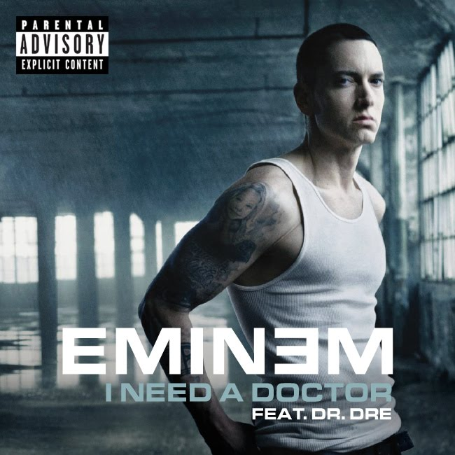
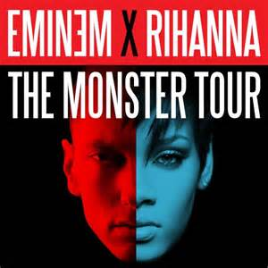

Marshall Bruce Mathers III (born October 17, 1972),[2] known professionally as Eminem (often stylized as EMINEM), is an American rapper, record producer, and actor. Eminem is the best-selling artist of the 2000s in the United States. Throughout his career, he has had 10 number-one albums on the Billboard 200 and five number-one singles on the Billboard Hot 100. With US sales of 45.1 million albums and 42 million tracks as of June 2014, Eminem is the second best-selling male artist of the Nielsen SoundScan era, the sixth best-selling artist in the United States and the best-selling hip-hop artist. Globally, he has sold more than 172 million albums, thus being one of the world's best-selling artists. Rolling Stone ranked him 83rd on its list of 100 Greatest Artists of All Time, calling him the King of Hip Hop.
Some of his iconic songs
- Superman (2009)
- Love the way you lie (2010)
- I need a doctor (2011)
- Monster (2013)
- Rap God (2013)
Love the way you lie(ft.Rihanna)

[2]
This song was written by Skylar Grey along is an album called Recovery.Backed by guitar, piano and violin, the track is a midtempo hip hop ballad with a pop refrain and describes two lovers who refuse to separate despite being in a dangerous love–hate relationship.The song won many awards and received five Grammy nominations. It is Eminem's best-selling single and ranked number one on several record charts, including the United States' Billboard Hot 100 for seven weeks. The single sold six million copies in the US and was the best-selling song of 2010 in the United Kingdom.
Click here for more infomation.
Lyrics
Just gonna stand there and watch me burn
But that's alright because I like the way it hurts
Just gonna stand there and hear me cry
But that's alright because I love the way you lie
I love the way you lie
I can't tell you what it really is, I can only tell you what it feels like
And right now there's a steel knife in my windpipe
I can't breathe but I still fight, while I can fight
As long as the wrong feels right it's like I'm in flight
High off her love, drunk from her hate, it's like I'm huffin' paint
And I love her the more I suffer, I suffocate
And right before I'm about to drown, she resuscitates
Me, she fucking hates me and I love it, wait
Where you going, I'm leaving you, no you ain't
Come back, we're running right back here we go again
It's so insane, 'cause when it's going good it's going great
I'm Superman with the wind at his back, she's Lois Lane
But when it's bad it's awful, I feel so ashamed
I snapped "who's that dude?", I don't even know his name
I laid hands on her, I'll never stoop so low again
I guess I don't know my own strength
Just gonna stand there and watch me burn
But that's alright because I like the way it hurts
Just gonna stand there and hear me cry
But that's alright because I love the way you lie
I love the way you lie
I love the way you lie
You ever love somebody so much, you can barely breathe when you're with 'em
You meet and neither one of you even know what hit 'em
Got that warm fuzzy feelin', yeah them chills used to get 'em
Now you're gettin' fuckin' sick of lookin' at 'em
You'd swore you'd never hit 'em, never do nothing to hurt 'em
Now you're in each others' face, spewing venom in your words when you spit 'em
You push pull each others' hair, scratch claw bit 'em
Throw 'em down pin 'em, so lost in them moments when you're in 'em
It's the rage that took over, it controls ya both
So they say you're best to go your separate ways, guess that they don't know ya
'Cause today, that was yesterday, yesterday is over
It's a different day, sound like broken records playin' over
But you promised her, next time you'll show restraint
You don't get another chance, life is no Nintendo game
But you lied again, now you get to watch her leave out the window
Guess that's why they call it window pane
Just gonna stand there and watch me burn
But that's alright because I like the way it hurts
Just gonna stand there and hear me cry
But that's alright because I love the way you lie
I love the way you lie
I love the way you lie
Now I know we said things, did things, that we didn't mean
Then we fall back into the same patterns, same routine
But your temper's just as bad as mine is, you're the same as me
But when it comes to love, you're just as blinded, baby please
Come back, it wasn't you, baby it was me
Maybe our relationship isn't as crazy as it seems
Maybe that's what happens when a tornado meets a volcano
All I know is I love you too much to walk away though
Come inside, pick up your bags off the sidewalk
Don't you hear sincerity in my voice when I talk
Told you this is my fault, look me in the eyeball
Next time I'm pissed, I'll aim my fist at the dry wall
Next time, there will be no next time, I apologize
Even though I know it's lies, I'm tired of the games
I just want her back, I know I'm a liar
If she ever tries to fuckin' leave again, I'ma tie her to the bed and set this house on fire
Just gonna stand there and watch me burn
But that's alright because I like the way it hurts
Just gonna stand there and hear me cry
But that's alright because I love the way you lie
I love the way you lie
I love the way you lie
I need a doctor(ft.Rihanna and Dr.Dre)

[3]
The song was written by Skylar Grey and produced by British record producer Alex da Kid,[1] mixed by Dr. Dre, and was released for digital download through the American iTunes Store on February 1, 2011.Musically, "I Need a Doctor" is predominantly a rap song, backed by a "spacey", drum-heavy production, with extra piano keys featured in the introduction and the chorus. Lyrically, the song is largely about Dr. Dre and Eminem's close friendship, and how they have often needed and inspired each other in the past.
Even though the song was leaked onto the Internet several months in advance of its release, it became a significant commercial success on its official release, particularly in the United States, where it peaked at number 4 on the Billboard Hot 100, becoming Dr. Dre's second highest peaking song on the chart ever, and also peaking in the upper regions of many national charts. As of October 2011, it has sold over 2,206,000 digital copies in the United States alone. This makes it Dr. Dre's first song to reach this point
Click here for more information.
Lyrics
I'm about to lose my mind
you've been gone for so long
I'm running out of time
I need a doctor
call me a doctor
I need a doctor, doctor
to bring me back to life
[Eminem]
I told the world one day I would pay it back
say it on tape, and lay it, record it
so that one day I could play it back
but I don't even know if I believe it when I'm saying that
ya'll starting to creep in, everyday it's just so grey and black
Hope - I just need a ray of that
'Cause no one sees my vision when I play it for 'em
They just say it's wack
they don't know what dope is
and I don't know if I was awake or asleep
when I wrote this,
all I know is you came to me when I was at my lowest
you picked me up, breathing life in me
I owe my life to you
but for the life of me, I don't see why you don't see like I do
but it just dawned on me you lost a son
daemons fighting you, it's dark.
let me turn on the lights and brighten me and enlighten you
I don't think you realize what you mean to me
not the slightest clue
'Cause me and you were like a crew
I was like your sidekick
you gon either wanna fight me when I get off this fucking mic
or you gon hug me
But I'm out of options, there's nothing else I can do 'cause
[Chorus - Skylar Grey]
I'm about to lose my mind
you've been gone for so long
I'm running out of time
I need a doctor
call me a doctor
I need a doctor, doctor
to bring me back to life
[Eminem]
It hurts when I see you struggle
you come to me with ideas
You say they're just pieces so I'm puzzled
'Cause the shit I hear is crazy
But you're either getting lazy or you don't believe in you no more
seems like your own opinion's not one you can form
Can't make a decision you keep questioning yourself
Second guessing and it's almost like you're begging for my help
like I'm your leader
your supposed to fucking be my mentor
I can endure no more,
I demand you remember who you are
it was you who believed in me
when everyone was telling you don't sign me
Everyone at the fucking label, let's tell the truth
you risked your career for me
I know it as well as you
nobody wanted to fuck with the white boy
Dre, I'm crying in this booth
You saved my life, now maybe it's my turn to save yours
but I can never repay you, what you did for me is way more
but I ain't giving up faith and you ain't giving up on me
Get up Dre, I'm dying, I need you, come back for fuck's sake 'cause
[Chorus - Skylar Grey]
I'm about to lose my mind
you've been gone for so long
I'm running out of time
I need a doctor
call me a doctor
I need a doctor, doctor
to bring me back to life
bring me back to life
bring me back to life
(I need a doctor, doctor
to bring me back to life)
[Dr Dre]
It literally feels like a lifetime ago
but I still remember the shit like it was just yesterday though
you walked in, yellow jump suit
whole room, cracked jokes
once you got inside the booth, told you, like smoke
went through friends, some of them I put on
but they just left, they said they was riding to the death
But where the fuck are they now?
now that I need them, I don't see none of them
all I see is Slim
fuck all you fair-weather friends
all I need is him
fucking backstabbers
when the chips were down you just laughed at us
Now you 'bout to feel the fucking wrath of Aftermath, faggots
you gon see us in our lab jackets and ask us where the fuck we been?
You can kiss my indecisive ass crack, maggots, and the cracker's ass
Little Cracker Jack, beat-making wackass backwards producers
I'm back, bastards
one more CD and then I'm packing up my bags and as I'm leaving
I'll guarantee they scream, Dre don't leave us like that man 'cause
[Chorus - Skylar Grey]
I'm about to lose my mind
you've been gone for so long
I'm running out of time
I need a doctor
call me a doctor
I need a doctor, doctor
to bring me back to life
Monster(ft.Rihanna)

[4]
"The Monster" is a song by American rapper Eminem, featuring guest vocals from Barbadian singer Rihanna, taken from Eminem's album The Marshall Mathers LP 2 (2013). The song was written by Eminem, Jon Bellion, and Bebe Rexha, with production handled by Frequency. "The Monster" marks the fourth collaboration between Eminem and Rihanna, following "Love the Way You Lie", its sequel "Love the Way You Lie (Part II)" (2010), and "Numb" (2012). "The Monster" was released on October 29, 2013, as the fourth single from the album. The song's lyrics present Rihanna coming to grips with her inner demons, while Eminem ponders the negative effects of his fame.
Upon release the song was met with positive reviews from music critics, who compared the song to "Love the Way You Lie". "The Monster" has successfully charted worldwide, topping the charts in twelve countries including Australia, Canada, France, Ireland, New Zealand, Switzerland, the United Kingdom and the United States' Billboard Hot 100. It also marks Eminem's first number one on the US Hot R&B/Hip-Hop Songs chart and has reached the top ten in Austria, Belgium, Italy and Spain.
The song's accompanying music video was directed by the American filmmaker Rich Lee, the video depicts Rihanna as Eminem's therapist in a session, as previous videos from his career are shown and referenced including "My Name Is", "Lose Yourself", "3 a.m.", "The Way I Am" and the 2001 Grammy Awards performance of "Stan" with Elton John. The video was well received and was nominated for several awards. Eminem and Rihanna performed the song live at the 2014 MTV Movie Awards
Click here for more infomation.
Lyrics
I'm friends with the monster that's under my bed
Get along with the voices inside of my head
You're trying to save me, stop holding your breath
And you think I'm crazy, yeah, you think I'm crazy
[Verse 1: Eminem]
I wanted the fame, but not the cover of Newsweek
Oh well, guess beggars can't be choosey
Wanted to receive attention for my music
Wanted to be left alone in public, excuse me
Been wanting my cake, and eat it too, and wanting it both ways
Fame made me a balloon cause my ego inflated
When I blew; see, it was confusing
Cause all I wanted to do is be the Bruce Lee of loose leaf
Abused ink, used it as a tool when I blew steam (wooh!)
Hit the lottery, oh wee
With what I gave up to get was bittersweet
With this like winning a huge meet
Ironic cause I think I'm getting so huge I need a shrink
I'm beginning to lose sleep: one sheep, two sheep
Going cuckoo and cooky as Kool Keith
But I'm actually weirder than you think
Cause I'm
[Hook]
[Bridge: Rihanna]
Well, that's nothing
Well, that's nothing
[Verse 2: Eminem]
No, I ain't much of a poet but I know somebody once told me
To seize the moment and don't squander it
Cause you never know when it all could be over tomorrow
So I keep conjuring, sometimes I wonder where these thoughts spawn from
(Yeah, ponder it, do you want this?
No wonder you losing your mind, the way it wanders)
Yo-lo-lo-lo-yee-whoo
I think you've been wandering off down yonder
And stumbled onto Jeff VanVonderen
Cause I need an interventionist
To intervene between me and this monster
And save me from myself and all this conflict
Cause the very thing that I love is killing me and I can't conquer it
My OCD is conking me in the head
Keep knocking, nobody's home, I'm sleepwalking
I'm just relaying what the voice in my head's saying
Don't shoot the messenger, I'm just friends with the
[Hook + Bridge]
[Verse 3: Eminem]
Call me crazy, but I have this vision
One day that I walk amongst you a regular civilian
But until then drums get killed and I'm coming straight at
Emcees, blood get spilled and I
Take it back to the days that I get on a Dre track
Give every kid who got played at
Pumped up feeling and *** to say back
To the kids who played 'em
I ain't here to save the *** children
But if one kid out of a hundred million
Who are going through a struggle feels and then relates that's great
It's payback, Russell Wilson falling way back
In the draft, turn nothing into something, still can make that
Straw into gold chump, I will spin Rumpelstiltskin in a haystack
Maybe I need a straight jacket, face facts
I am nuts for real, but I'm okay with that
It's nothing, I'm still friends with the
References